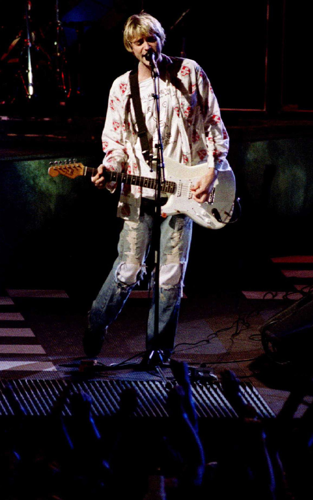

Kurt Donald Cobain (February 20, 1967 – April 5, 1994) was an American
singer, songwriter, and musician, best known as the guitarist and
leader of the rock band Nirvana. Regarded as a Generation X icon, he
is considered to be one of the most iconic and influential rock
musicians in the history.
Born in Aberdeen, Washington, Cobain formed the band Nirvana with
Krist Novoselic and Aaron Burckhard in 1987 and established it as part
of the Seattle music scene which later became known as grunge. After
signing with major label DGC Records, Nirvana found global success
with "Smells Like Teen Spirit" from their critically acclaimed second
album Nevermind (1991). Following the success of Nevermind, Nirvana
was labelled "the flagship band" of Generation X, and Cobain was
hailed as "the spokesman of a generation"; however, Cobain resented
this, believing his message and artistic vision had been
misinterpreted by the public, with his personal problems often subject
to media attention.
During the last years of his life, Cobain struggled with heroin
addiction and chronic health problems such as depression. He also
struggled with the personal and professional pressures of fame, and
his marriage to musician Courtney Love. On April 8, 1994, Cobain was
found dead at his home in Seattle at the age of 27; police concluded
he had died on April 5 from a self-inflicted shotgun wound to his
head.
“Nobody dies a virgin... Life fucks us all.”

Cobain originally wanted Nevermind to be divided into two sides: a Boy
side, for the songs written about the experiences of his early life
and childhood, and a Girl side, for the songs written about his
dysfunctional relationship with his girlfriend. In the four months
following their break-up, Kurt would write a half dozen of his most
memorable songs. Cobain said in an interview with Musician that "some
of my very personal experiences, like breaking up with girlfriends and
having bad relationships, feeling that death void that the person in
the song is feeling. Very lonely, sick".
While Cobain regarded In Utero "for the most part very impersonal", on
the album he dealt with his parents' divorce, his newfound fame and
the public image and perception of himself and Courtney Love on "Serve
the Servants," with his enamored relationship with Love conveyed
through lyrical themes of pregnancy and the female anatomy on
"Heart-Shaped Box." Cobain wrote "Rape Me" as an objective discussion
of rape. He wrote about fame, drug addiction and abortion on
"Pennyroyal Tea", as well as women's rights and the life of
Seattle-born Farmer on "Frances Farmer Will Have Her Revenge on
Seattle."
Cobain was affected enough to write the song "Polly" from Nevermind,
after reading a newspaper story of an incident in 1987, where a
14-year-old girl was kidnapped after attending a punk rock show then
raped and tortured with a blowtorch. She managed to escape after
gaining the trust of her captor Gerald Friend through flirting with
him.
Patrick Süskind's novel Perfume: The Story of a Murderer inspired
Cobain to write the song "Scentless Apprentice" from In Utero. The
book is a historical horror novel about a perfumer's apprentice born
with no body odor of his own but with a highly developed sense of
smell, and who attempts to create the "ultimate perfume" by killing
virginal women and taking their scent.
Nirvana was an American rock band formed in Aberdeen, Washington in
1987. It was founded by lead singer and guitarist Kurt Cobain and
bassist Krist Novoselic. Nirvana went through a succession of
drummers, the longest-lasting and best-known being Dave Grohl, who
joined in 1990. Though the band dissolved in 1994 after the death of
Cobain, their music maintains a popular following and continues to
influence modern rock and roll culture.
In the late 1980s, Nirvana established itself as part of the Seattle
grunge scene, releasing its first album, Bleach, for the independent
record label Sub Pop in 1989. They developed a sound that relied on
dynamic contrasts, often between quiet verses and loud, heavy
choruses. They developed a sound that relied on dynamic contrasts,
often between quiet verses and loud, heavy choruses. During their
three years as a mainstream act, Nirvana was awarded an American Music
Award, Brit Award, Grammy Award, seven MTV Video Music Awards and two
NME Awards. They have sold over 25 million records in the United
States and over 75 million records worldwide, making them one of the
best-selling bands of all time.
Dating back to 1988, "About a Girl" was reportedly written after
Cobain spent an afternoon repeatedly listening to "Meet the Beatles!".
Cobain didn't have a title for the song when he first brought it into
the studio. When asked what it was about, he replied, "It's about a
girl."
The "girl" was Tracy Marander, Cobain's then-girlfriend, with whom he
lived at the time. She asked Cobain why he had never written a song
for her, and he replied with this song. Cobain never told Marander
that he had written "About a Girl" for her.